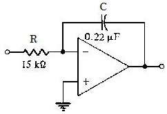

Q.1 Refer to the given figure. This circuit is known as ?

A) A non-inverting amplifier
B) A differentiator
C) An integrator
D) A summing amplifier
Ans : C
Q.2 Refer to the given figure. A square-wave input is applied to this amplifier. The output voltage is most likely to be?
A) A square wave
B) A triangle wave
C) A sine wave
D) No output
Ans : B
Q.3 The ramp voltage at the output of an op-amp integrator?
A) Increases or decreases at a linear rate
B) Increases or decreases exponentially
C) Is always increasing and never decreasing
D) Is constant
Ans : A
Q.4 Refer to the given figure. If Vin = 5 V, the rate of change of the output voltage in response to a single pulse input is?
A) 15.2 mV / μS
B) 15.2 V / μS
C) 1.52 mV / μS
D) 1.52 V / μS
Ans : C
Q.5 An ideal Op-Amp is an ideal?
A) Voltage-controlled voltage source (VCVS)
B) Voltage-controlled current source (VCCS)
C) Current-controlled voltage source (CCVS)
D) Current-controlled current source (CCCS)
Ans : C
Sources